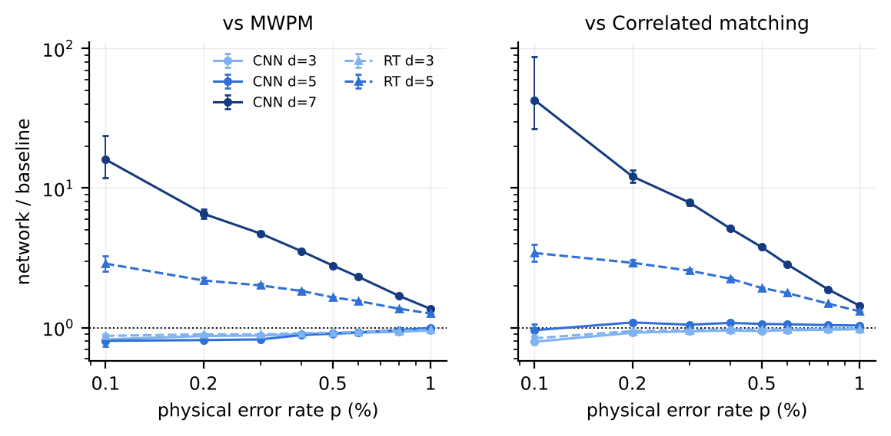
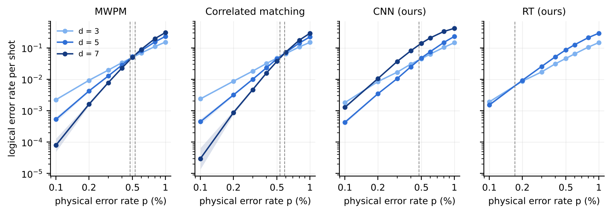
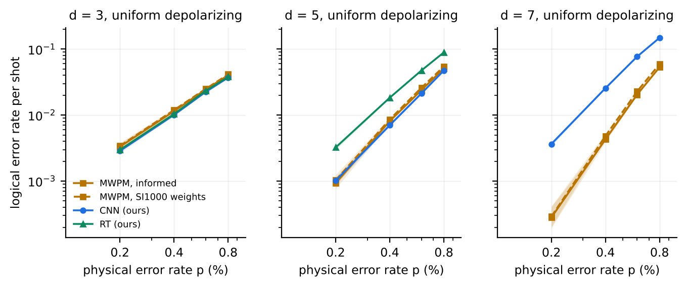
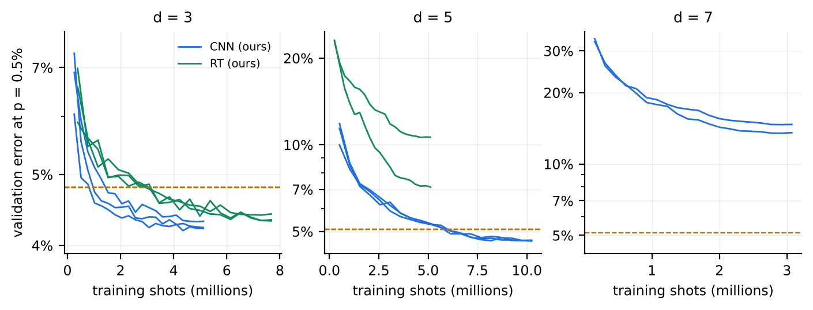
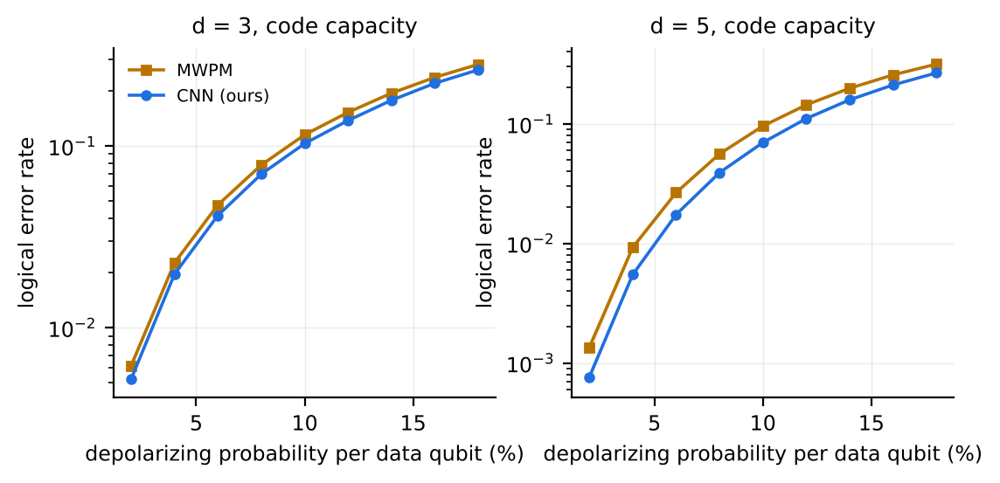

A fault-tolerant quantum computer stores each logical qubit in many physical qubits and repeatedly measures parity checks (stabilizers) to detect errors without disturbing the encoded state. The surface code is the leading candidate for superconducting hardware: a distance-d rotated surface code uses d2 data qubits and d2−1 checks, and corrects any ⌊(d−1)/2⌋ errors. The measured checks form the syndrome. A classical program, the decoder, must infer from the syndrome which correction preserves the logical state. If the physical error rate p is below a threshold, increasing d suppresses the logical error rate exponentially; above it, larger codes are worse. The threshold depends on the decoder, so better decoding directly relaxes hardware requirements. Decoders must also be fast: about one microsecond per syndrome round on superconducting devices.
The standard decoder, MWPM [1, 2], pairs up detection events with chains of minimum total weight. It is fast and well understood, but it treats X-type and Z-type errors independently and returns the single most likely error rather than the most likely logical class. Neural decoders can in principle learn the correlations that matching ignores. The question examined here is narrow: with a budget of CPU-hours, how far does that advantage go, and what does it cost?
Neural decoding of topological codes dates back to at least 2017 (Torlai and Melko; Krastanov and Jiang; Baireuther et al.). The current reference is AlphaQubit [3], a recurrent transformer that outperformed correlated matching and tensor-network decoding on Sycamore experimental data at distances 3 and 5 and was studied on simulated data up to distance 11, at the price of a very large training effort and of latency unsuited to real time. Follow-up work targets scalability and speed: AlphaQubit 2 [4] reports real-time decoding of surface codes up to distance 11 and of colour codes on commercial accelerators; Lee, Hur and Park [5] replace attention by a Mamba state-space core to reduce the cost per round and validate on the public Sycamore data and on SI1000 simulations. Convolutional decoders for circuit noise [6], neural pre-decoders [7] and critical assessments of when neural decoders pay off [8] are part of the same picture. The closest antecedent of this report is the QuTech work of Varbanov et al. [9], a recurrent network for small-distance surface codes under circuit-level noise, benchmarked against PyMatching with Stim-generated data.
What this report adds is not a method. It is a compact, fully open pipeline with an explicitly fair comparison protocol, negative results included, that runs on a laptop-class CPU, together with an interactive visual explanation.
We use Stim [10] to generate rotated surface-code memory experiments in the Z basis with d rounds of syndrome extraction, for d = 3, 5, 7 (24, 120 and 336 detectors). The main noise model is SI1000 [11], a one-parameter circuit-level model inspired by superconducting hardware: two-qubit gates are followed by two-qubit depolarizing noise of strength p, one-qubit gates by p/10, resets fail with probability 2p, measurement outcomes flip with probability 5p, qubits idling during gate layers depolarize with p/10 and qubits idling during measurement or reset layers with 2p. We apply these rates to Stim's CX-based circuit rather than to a CZ compilation; this is a deviation from the original definition. The sweep covers eight values of p from 0.1% to 1.0%. For out-of-distribution tests we use uniform circuit-level depolarizing noise (all four Stim noise parameters equal to p), which the networks never see in training.
MWPM and correlated matching are run with PyMatching 2.4 [2]. Both receive the exact detector error model of the test noise at the test value of p. This is the best case for matching: it knows the noise. In the out-of-distribution experiment we also report matching with stale weights taken from the SI1000 model.
Both networks map the detection events of a shot to a single logit, the predicted flip of the logical observable, as in AlphaQubit. Detection events are placed on a (d+1) × (d+1) grid per round using Stim's detector coordinates, giving a volume of d+1 time slices.
Training uses shots generated on the fly by Stim (no fixed training set, hence no memorization), mixing the eight values of p uniformly, with binary cross-entropy, AdamW, batch size 256, peak learning rate 2·10−3 with warm-up and cosine decay, and gradient clipping. There is one model per distance, not per value of p. Each model is trained on a single CPU core. Step counts were fixed in advance from a throughput pilot; an equal-wall-time pilot at d = 5 selected the narrower CNN. Model sizes, training shots and CPU time are listed in Table 5.
sinter, Stim's sampling tool, within statistical error.Table 1 gives the ratio of the logical error rate of each network to that of MWPM on the same shots, and Table 2 the same against correlated matching. Values below 1 favour the network. Green entries are significant wins, red entries significant losses, at the 95% level.
| p | CNN, d=3 | RT, d=3 | CNN, d=5 | RT, d=5 | CNN, d=7 |
|---|---|---|---|---|---|
| 0.1% | 0.82 [0.80, 0.85] | 0.87 [0.85, 0.90] | 0.81 [0.73, 0.88] | 2.88 [2.55, 3.28] | 16.03 [11.80, 23.68] |
| 0.2% | 0.87 [0.86, 0.88] | 0.90 [0.88, 0.91] | 0.81 [0.79, 0.84] | 2.18 [2.09, 2.28] | 6.55 [6.08, 7.08] |
| 0.3% | 0.88 [0.87, 0.89] | 0.90 [0.89, 0.91] | 0.82 [0.81, 0.84] | 2.01 [1.96, 2.06] | 4.72 [4.57, 4.90] |
| 0.4% | 0.90 [0.89, 0.91] | 0.91 [0.91, 0.92] | 0.88 [0.87, 0.90] | 1.83 [1.80, 1.87] | 3.54 [3.47, 3.61] |
| 0.5% | 0.90 [0.89, 0.90] | 0.92 [0.91, 0.93] | 0.91 [0.90, 0.92] | 1.65 [1.63, 1.67] | 2.79 [2.75, 2.82] |
| 0.6% | 0.92 [0.91, 0.92] | 0.93 [0.93, 0.94] | 0.93 [0.92, 0.93] | 1.55 [1.54, 1.57] | 2.31 [2.29, 2.34] |
| 0.8% | 0.93 [0.93, 0.94] | 0.95 [0.95, 0.95] | 0.96 [0.95, 0.96] | 1.37 [1.36, 1.38] | 1.69 [1.68, 1.70] |
| 1.0% | 0.96 [0.95, 0.96] | 0.97 [0.97, 0.97] | 1.00 [0.99, 1.00] | 1.26 [1.26, 1.27] | 1.36 [1.36, 1.37] |
Table 1. Network / MWPM, with 95% paired bootstrap intervals.
| p | CNN, d=3 | RT, d=3 | CNN, d=5 | RT, d=5 | CNN, d=7 |
|---|---|---|---|---|---|
| 0.1% | 0.79 [0.76, 0.82] | 0.84 [0.81, 0.87] | 0.96 [0.87, 1.06] | 3.43 [3.01, 3.96] | 42.75 [26.79, 87.00] |
| 0.2% | 0.92 [0.91, 0.93] | 0.95 [0.93, 0.96] | 1.09 [1.05, 1.13] | 2.92 [2.77, 3.08] | 12.12 [10.93, 13.52] |
| 0.3% | 0.94 [0.93, 0.95] | 0.96 [0.95, 0.97] | 1.05 [1.03, 1.07] | 2.56 [2.49, 2.64] | 7.87 [7.54, 8.25] |
| 0.4% | 0.95 [0.95, 0.96] | 0.97 [0.96, 0.98] | 1.08 [1.07, 1.10] | 2.24 [2.20, 2.29] | 5.14 [5.02, 5.27] |
| 0.5% | 0.95 [0.94, 0.95] | 0.97 [0.97, 0.98] | 1.06 [1.05, 1.07] | 1.92 [1.90, 1.95] | 3.78 [3.72, 3.84] |
| 0.6% | 0.96 [0.95, 0.96] | 0.98 [0.97, 0.98] | 1.06 [1.05, 1.07] | 1.77 [1.75, 1.79] | 2.84 [2.81, 2.87] |
| 0.8% | 0.96 [0.96, 0.97] | 0.98 [0.98, 0.99] | 1.04 [1.04, 1.05] | 1.49 [1.47, 1.50] | 1.88 [1.87, 1.90] |
| 1.0% | 0.98 [0.97, 0.98] | 0.99 [0.98, 0.99] | 1.04 [1.03, 1.04] | 1.31 [1.30, 1.32] | 1.44 [1.43, 1.45] |
Table 2. Network / correlated matching.


| Decoder | Distances | Crossing | 95% interval |
|---|---|---|---|
| MWPM | 3 and 5 | 0.47% | 0.47% to 0.48% |
| MWPM | 5 and 7 | 0.53% | 0.51% to 0.54% |
| Correlated matching | 3 and 5 | 0.53% | 0.52% to 0.55% |
| Correlated matching | 5 and 7 | 0.59% | 0.58% to 0.60% |
| CNN | 3 and 5 | 0.47% | 0.47% to 0.48% |
| CNN | 5 and 7 | no crossing in range | n/a |
| RT | 3 and 5 | 0.17% | 0.15% to 0.19% |
Table 3. Finite-size crossings under SI1000. These are not asymptotic thresholds. A network that is under-trained at the larger distance shows an artificially low crossing or none: this reflects the training budget, not a property of the code.

| d | p | MWPM informed | MWPM, SI1000 weights | Corr. matching informed | CNN | RT |
|---|---|---|---|---|---|---|
| 3 | 0.2% | 0.331% | 0.341% | 0.379% | 0.287% | 0.297% |
| 3 | 0.4% | 1.144% | 1.192% | 1.111% | 1.007% | 1.039% |
| 3 | 0.6% | 2.439% | 2.494% | 2.406% | 2.242% | 2.325% |
| 3 | 0.8% | 4.011% | 4.133% | 3.904% | 3.691% | 3.782% |
| 5 | 0.2% | 0.093% | 0.103% | 0.074% | 0.101% | 0.323% |
| 5 | 0.4% | 0.809% | 0.858% | 0.609% | 0.702% | 1.833% |
| 5 | 0.6% | 2.384% | 2.597% | 1.836% | 2.125% | 4.732% |
| 5 | 0.8% | 5.077% | 5.444% | 4.203% | 4.722% | 8.894% |
| 7 | 0.2% | 0.028% | 0.029% | 0.008% | 0.364% | n/a |
| 7 | 0.4% | 0.428% | 0.482% | 0.224% | 2.553% | n/a |
| 7 | 0.6% | 2.038% | 2.284% | 1.282% | 7.675% | n/a |
| 7 | 0.8% | 5.300% | 5.922% | 3.892% | 14.803% | n/a |
Table 4. Logical error rates under uniform depolarizing noise.
| d | Rounds | MWPM | RT (mean over seeds) | RT / MWPM |
|---|---|---|---|---|
| 3 | 3 | 1.98% | 1.81% | 0.91 |
| 3 | 6 | 3.36% | 3.69% | 1.10 |
| 3 | 12 | 6.14% | 15.04% | 2.45 |
| 5 | 5 | 1.32% | 2.54% | 1.93 |
| 5 | 10 | 2.36% | 6.65% | 2.81 |
| 5 | 20 | 4.56% | 18.79% | 4.12 |
Table 4b. Recurrent model run for more rounds than in training (trained with d rounds), p = 0.3%.

| Model | d | Seeds | Parameters | Training shots | CPU time per seed | Final validation error (p=0.5%) | MWPM, same shots |
|---|---|---|---|---|---|---|---|
| CNN | 3 | 3 | 179,721 | 5.1 M | 35 min | 4.22% to 4.32% | 4.80% |
| RT | 3 | 3 | 38,593 | 7.7 M | 34 min | 4.32% to 4.42% | 4.80% |
| CNN | 5 | 3 | 253,193 | 10.2 M | 93 min | 4.63% to 4.66% | 5.09% |
| RT | 5 | 2 | 22,801 | 5.1 M | 72 min | 7.13% to 10.63% | 5.09% |
| CNN | 7 | 2 | 561,033 | 3.1 M | 58 min | 13.55% to 14.69% | 5.12% |
Table 5. Every trained model.
| d | Decoder | One shot at a time | Batched | Relative to MWPM |
|---|---|---|---|---|
| 3 | MWPM | 3.1 µs | 289 ns | 1× |
| 3 | Correlated matching | 4.0 µs | 891 ns | 3× |
| 3 | CNN | 526.2 µs | 93.6 µs | 324× |
| 3 | RT | 505.7 µs | 52.7 µs | 182× |
| 5 | MWPM | 5.9 µs | 2.4 µs | 1× |
| 5 | Correlated matching | 11.1 µs | 6.8 µs | 3× |
| 5 | CNN | 834.0 µs | 175.9 µs | 75× |
| 5 | RT | 780.9 µs | 206.4 µs | 88× |
| 7 | MWPM | 14.1 µs | 8.5 µs | 1× |
| 7 | Correlated matching | 26.0 µs | 21.7 µs | 3× |
| 7 | CNN | 1.61 ms | 506.9 µs | 60× |
Table 6. Decoding time per shot on one CPU core. PyMatching is optimized C++; the networks run in plain PyTorch with no quantization or dedicated hardware.
The web demo lets a visitor place Pauli errors on data qubits, which corresponds to code-capacity noise with perfect syndrome measurement. A separate 2D CNN was trained for depolarizing code-capacity noise and predicts the logical class; the displayed correction is the matching correction multiplied by a logical operator when the network disagrees. Against MWPM, at d = 3 the ratio at 8% is 0.89 [0.89, 0.90]; at d = 5 the ratio at 8% is 0.70 [0.69, 0.70] (three seeds, pooled). The gain comes mostly from Y errors, which matching treats as independent X and Z errors.

Distance 3: the networks win. Both networks make fewer logical errors than MWPM at every noise level, from 0.82 times as many at p = 0.1% to 0.96 at 1% for the CNN, and they also beat correlated matching throughout. The three seeds agree within about one percentage point of ratio. With 24 detectors per shot, a few million training shots are enough for a small network to approach the optimal decision rule, which matching cannot represent because it ignores Y-type and hook correlations.
Distance 5: a split result. The CNN still beats MWPM (0.81 to 0.96, with a tie at p = 1%), but it loses to correlated matching by 4 to 9% at every noise level except the lowest, where the interval includes 1. The stronger classical baseline therefore changes the verdict, which is the reason it was included. The recurrent transformer loses clearly (1.3 to 2.9 times the errors of MWPM) and its two seeds differ by a factor of about 1.6: it spent most of its budget on a long plateau, was still improving when training stopped (Figure 5), and received half as many training shots as the CNN because each step is slower. This is a statement about our budget, not about the architecture: the published recurrent transformers are the best decoders known, at vastly larger training cost.
Distance 7: the network loses. With 3 million training shots the CNN makes between 1.4 and 16 times as many logical errors as MWPM, and the gap widens as p decreases, exactly where a decoder matters most. Its curve does not cross the distance-5 curve in the range studied, so no crossing can be reported. The recurrent model was not trained at this distance: at the measured throughput the budget would have bought fewer shots than the distance-5 model needed just to leave its plateau.
Why the advantage erodes. The number of detectors grows as d3 (24, 120, 336) and the number of error configurations that must be told apart grows much faster, while our throughput fell from several thousand training shots per second at d = 3 to a few hundred at d = 7. MWPM needs no training at all: its structure encodes the geometry of the code. This is the scaling problem that motivates the large pre-training of AlphaQubit [3] and the scalability work that followed [4, 5].
Thresholds. For MWPM the crossings are 0.47% (distances 3 and 5) and 0.53% (5 and 7), and for correlated matching 0.53% and 0.59%, consistent with published values for SI1000. The CNN crosses at 0.47% for distances 3 and 5, indistinguishable from MWPM. The apparent 0.17% crossing of the recurrent model is an artefact of its under-trained distance-5 curve and should not be read as a threshold.
Unseen noise. Under uniform depolarizing noise, never seen in training, the distance-3 networks still beat MWPM even when MWPM is given the correct error model (0.87 to 0.92 for the CNN). At distance 5 the CNN keeps a lead over informed MWPM for p ≥ 0.4% (0.87 to 0.93), has no significant lead at 0.2%, and falls further behind correlated matching (1.12 to 1.37). Matching with stale SI1000 weights degrades by only 2 to 13%, a reminder of how robust it is. The second kind of generalization failed outright: run for four times as many rounds as in training, the recurrent model degrades to 2.4 times the MWPM error rate at distance 3 and worse at distance 5, although its weights are shared across rounds. Published recurrent decoders obtain this generalization by training on a range of round counts, which we did not do.
Latency. On one CPU core, in batches, the networks are 60 to 320 times slower than PyMatching per shot, and about 110 to 170 times slower one shot at a time (0.5 to 1.6 ms against 3 to 14 µs). Even the fastest figure is two to three orders of magnitude away from the microsecond scale of superconducting hardware. The comparison is between unoptimized PyTorch and optimized C++, so it bounds nothing; it only shows that accuracy is not the whole question.
| Hypothesis (docs/EXPERIMENT.md) | Outcome |
|---|---|
| H1. At d = 3 both networks beat uncorrelated MWPM. | Confirmed |
| H2. At d = 5 the advantage shrinks or disappears. | Partly: CNN still wins, RT loses |
| H3. At d = 7 the networks lose to MWPM. | Confirmed (CNN; RT not trained) |
| H4. Correlated matching is harder to beat than MWPM. | Confirmed (decisive at d = 5) |
| H5. Networks are 10 to 1000 times slower per shot. | Confirmed (60 to 320 times) |
| H6. On unseen noise networks degrade more than informed MWPM. | Refuted at d = 3, mixed at d = 5 |
Table 7. Deviations from the pre-registered design: 200,000 instead of 500,000 test shots at d = 3; two instead of three seeds for the RT at d = 5; no RT at d = 7; the optional learned-weights matching was replaced by correlated matching as a second baseline. Reasons are recorded in docs/DECISIONS.md. Total training cost: about 12.4 CPU-hours for the thirteen circuit-noise models.
Natural next steps, in order of value: training on a GPU to test how much of the distance-5 and distance-7 gap is budget; soft-information and X-basis experiments; evaluation on the public Sycamore and Willow data sets; a hybrid decoder in which a network re-weights the matching graph; and quantized inference to measure latency meaningfully. Separately, LLM agents that design quantum circuits have become an active area in 2026 (for example StabilizerBench [13]); it is outside the scope of this project.
make test runs the test suite and make all regenerates data, baselines, models, evaluation, figures, site data and this report. Seeds and configurations are in configs/experiment.json; trained weights are in models/. This project relies on Stim, PyMatching, sinter and PyTorch. The code, the text and the analysis were produced with substantial help from AI coding tools; the author is responsible for any errors. Several references below could not be opened online from the build environment and were cited from search results or memory; their status is listed in docs/RESEARCH.md.